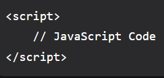

Introduction to JavaScript
What is JavaScript ?
JavaScript is a lightweight, cross-platform, single-threaded, and interpreted compiled programming language. It is also known as the scripting language for webpages. It is well-known for the development of web pages, and many non-browser environments also use it.
JavaScript is a weakly typed language (dynamically typed). JavaScript can be used for Client-side developments as well as Server-side developments. JavaScript is both an imperative and declarative type of language. JavaScript contains a standard library of objects, like Array, Date, and Math, and a core set of language elements like operators, control structures, and statements.

Client-side: It supplies objects to control a browser and its Document Object Model (DOM). Like if client-side extensions allow an application to place elements on an HTML form and respond to user events such as mouse clicks, form input, and page navigation. Useful libraries for the client side are AngularJS, ReactJS, VueJS, and so many others.
Server-side: It supplies objects relevant to running JavaScript on a server. For if the server-side extensions allow an application to communicate with a database, and provide continuity of information from one invocation to another of the application, or perform file manipulations on a server. The useful framework which is the most famous these days is node.js.
Imperative language – In this type of language we are mostly concerned about how it is to be done. It simply controls the flow of computation. The procedural programming approach, object, oriented approach comes under this as async await we are thinking about what is to be done further after the async call.
Declarative programming – In this type of language we are concerned about how it is to be done, basically here logical computation requires. Her main goal is to describe the desired result without direct dictation on how to get it as the arrow function does.
How to Link JavaScript File in HTML ?
JavaScript can be added to HTML file in two ways:
Internal JS: We can add JavaScript directly to our HTML file by writing the code inside the 'script' tag. The 'script' tag can either be placed inside the 'head' or the 'body' tag according to the requirement.
External JS: We can write JavaScript code in another files having an extension.js and then link this file inside the 'head' tag of the HTML file in which we want to add this code.
Syntax
History of JavaScript
It was created in 1995 by Brendan Eich while he was an engineer at Netscape. It was originally going to be named LiveScript but was renamed. Unlike most programming languages, JavaScript language has no concept of input or output. It is designed to run as a scripting language in a host environment, and it is up to the host environment to provide mechanisms for communicating with the outside world. The most common host environment is the browser.
Features of JavaScript
According to a recent survey conducted by Stack Overflow, JavaScript is the most popular language on earth. With advances in browser technology and JavaScript having moved into the server with Node.js and other frameworks, JavaScript is capable of so much more. Here are a few things that we can do with JavaScript:
JavaScript was created in the first place for DOM manipulation. Earlier websites were mostly static, after JS was created dynamic Web sites were made.
Functions in JS are objects. They may have properties and methods just like other objects. They can be passed as arguments in other functions.
Can handle date and time.
Performs Form Validation although the forms are created using HTML.
No compiler is needed.
Applications of JavaScript
Web Development: Adding interactivity and behavior to static sites JavaScript was invented to do this in 1995. By using AngularJS that can be achieved so easily.
Web Applications: With technology, browsers have improved to the extent that a language was required to create robust web applications. When we explore a map in Google Maps then we only need to click and drag the mouse. All detailed view is just a click away, and this is possible only because of JavaScript. It uses Application Programming Interfaces(APIs) that provide extra power to the code. The Electron and React are helpful in this department.
Server Applications: With the help of Node.js, JavaScript made its way from client to server and Node.js is the most powerful on the server side.
Games: Not only in websites, but JavaScript also helps in creating games for leisure. The combination of JavaScript and HTML 5 makes JavaScript popular in game development as well. It provides the EaseJS library which provides solutions for working with rich graphics.
Smartwatches: JavaScript is being used in all possible devices and applications. It provides a library PebbleJS which is used in smartwatch applications. This framework works for applications that require the Internet for their functioning.
Mobile Applications: JavaScript can also be used to build an application for non-web contexts. The features and uses of JavaScript make it a powerful tool for creating mobile applications. This is a Framework for building web and mobile apps using JavaScript. Using React Native, we can build mobile applications for different operating systems. We do not require to write code for different systems. Write once use it anywhere!
Machine Learning: This JavaScript ml5.js library can be used in web development by using machine learning.
Limitations of JavaScript
Security risks: JavaScript can be used to fetch data using AJAX or by manipulating tags that load data such as img, object, script. These attacks are called cross-site script attacks. They inject JS that is not part of the site into the visitor’s browser thus fetching the details.
Performance: JavaScript does not provide the same level of performance as offered by many traditional languages as a complex program written in JavaScript would be comparatively slow. But as JavaScript is used to perform simple tasks in a browser, so performance is not considered a big restriction in its use.
Complexity: To master a scripting language, programmers must have a thorough knowledge of all the programming concepts, core language objects, and client and server-side objects otherwise it would be difficult for them to write advanced scripts using JavaScript.
Weak error handling and type checking facilities: It is a weakly typed language as there is no need to specify the data type of the variable. So wrong type checking is not performed by compile.